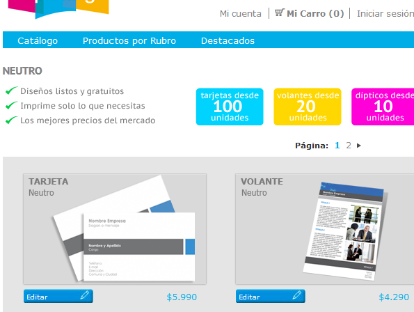

<?xml version="1.0" encoding="UTF-8"?><rss version="2.0"
	xmlns:content="http://purl.org/rss/1.0/modules/content/"
	xmlns:wfw="http://wellformedweb.org/CommentAPI/"
	xmlns:dc="http://purl.org/dc/elements/1.1/"
	xmlns:atom="http://www.w3.org/2005/Atom"
	xmlns:sy="http://purl.org/rss/1.0/modules/syndication/"
	xmlns:slash="http://purl.org/rss/1.0/modules/slash/"
	>

<channel>
	<title>Customer web-to-print sites &#8211; On web to print sofware, solutions and hosted services</title>
	<atom:link href="http://www.zetaprints.com/blog/category/customer-web-to-print-sites/feed/" rel="self" type="application/rss+xml" />
	<link>http://www.zetaprints.com/blog</link>
	<description>From web to print and everything in between</description>
	<lastBuildDate>Fri, 02 Aug 2013 10:44:32 +0000</lastBuildDate>
	<language>en-US</language>
	<sy:updatePeriod>hourly</sy:updatePeriod>
	<sy:updateFrequency>1</sy:updateFrequency>
	<generator>https://wordpress.org/?v=4.4.1</generator>
	<item>
		<title>ePrinting</title>
		<link>http://www.zetaprints.com/blog/2011/12/23/eprinting/</link>
		<comments>http://www.zetaprints.com/blog/2011/12/23/eprinting/#respond</comments>
		<pubDate>Fri, 23 Dec 2011 13:48:24 +0000</pubDate>
		<dc:creator><![CDATA[juro]]></dc:creator>
				<category><![CDATA[Customer web-to-print sites]]></category>

		<guid isPermaLink="false">http://www.zetaprints.com/blog/?p=956</guid>
		<description><![CDATA[Some of our clients do tend to stand out in the web-to-print crowd, www.eprinting.cl is a good example. These guys give a good demonstration of how far one can take our web-to-print service and take advantage of all its features. Web-to-print localization Their site is fully localized for the Spanish market in Chile. This is [&#8230;]]]></description>
				<content:encoded><![CDATA[<p>Some of our clients do tend to stand out in the <a title="ZetaPrints web-to-print and dynamic imaging" href="../../../../">web-to-print</a> crowd, <a title="ePrinting.cl web-to-print store" href="http://www.eprinting.cl/">www.eprinting.cl</a> is a good example. These guys give a good demonstration of how far one can take our web-to-print service and take advantage of all its features.</p>
<h2>Web-to-print localization</h2>
<p>Their site is fully <a title="Web-to-print store localization" href="../../../../magentohelp/magento-web-to-print-localization/">localized</a> for the Spanish market in Chile. This is one of the languages that our <a title="Web-to-print extension for Magento" href="https://www.magentocommerce.com/magento-connect/web-to-print-and-dynamic-imaging.html">web-to-print extension</a> for Magento comes pre-translated with. You can <a title="Web-to-print store localization" href="../../../../magentohelp/magento-web-to-print-localization/">translate your store</a> into any language.</p>
<p></p>
<h2>Custom web-to-print themes</h2>
<p>These guys obviously made the right choice when they decided to go with a <a title="Magento eCommerce platform" href="http://www.magentocommerce.com/">Magento</a> based web-to-print store. Magento&#8217;s powerful eCommerce storefront comes packed with tons of features and is extensively supported by numerous third-party extensions, such as our own. On top of all, the looks of a Magento store can be completely customized by integrating custom <a title="Web-to-print themes for Magento" href="../../../../magentohelp/category/themes-for-web-to-print/">themes</a>.</p>
<p><a href="../../../wp-content/uploads/2011/12/ePrinting_01.png"></a></p>
]]></content:encoded>
			<wfw:commentRss>http://www.zetaprints.com/blog/2011/12/23/eprinting/feed/</wfw:commentRss>
		<slash:comments>0</slash:comments>
		</item>
	</channel>
</rss>

<!-- Localized -->